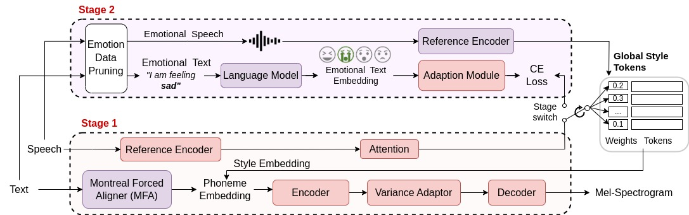

TEMOTTS: Text-aware Emotional Text-to-Speech with no labels
Shreeram Suresh Chandra, Zongyang du, Berrak Sisman
Speech and Machine learning lab - The University of Texas at Dallas
I, at any rate, am convinced that He does not throw dice.
Model Architecture

Figure 1. Schematic diagram of the proposed framework JES-StarGAN. Blue boxes represent the modules involved in the trainingand the yellow boxes represent the pre-trained modules.